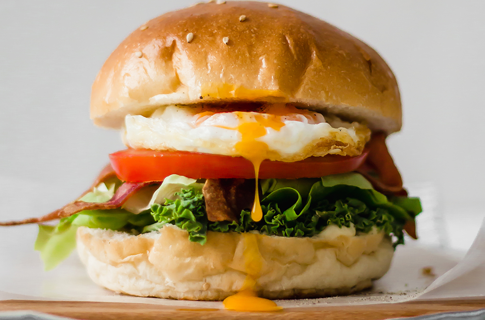

Sumérgete en el mundo de las hamburguesas vegetarianas con esta receta que combina la textura terrosa de las lentejas con el sabor umami de los champiñones. Una opción saludable y deliciosa que te hará olvidar la carne por completo.
Ingredientes
- 1 taza de lentejas cocidas
- 1/2 taza de champiñones finamente picados
- 1/4 de taza de cebolla morada picada
- 2 dientes de ajo picados
- 1/4 de taza de pan rallado
- 1 huevo (para versión vegana, usa 1 cucharada de linaza molida mezclada con 3 cucharadas de agua)
- 1 cucharadita de comino molido
- Sal y pimienta al gusto
- Aceite de oliva
Instrucciones
- En un sartén a fuego medio, saltea los champiñones y la cebolla con un poco de aceite hasta que estén dorados. Añade el ajo y cocina por un minuto más.
- En un bol grande, mezcla las lentejas cocidas con la preparación de champiñones y cebolla.
- Agrega el pan rallado, el huevo (o sustituto vegano), comino, sal y pimienta. Mezcla bien hasta obtener una masa homogénea.
- Forma las hamburguesas con las manos y colócalas en una bandeja.
- Calienta un poco de aceite en un sartén a fuego medio y cocina las hamburguesas por ambos lados hasta que estén doradas y firmes.
- Sirve en pan de hamburguesa con tus toppings favoritos.